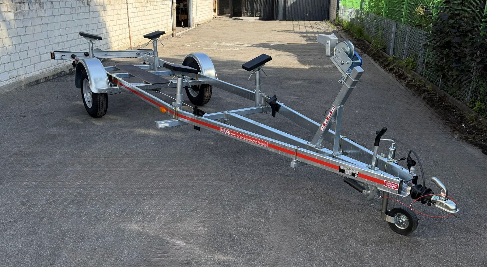

Fristen, Kosten und Vorbereitung: Das wird bei der Hauptuntersuchung eines Bootsanhängers bis 3,5 Tonnen geprüft – und worauf Sie bei einem Bootstrailer besonders achten sollten.
Umgangssprachlich heißt es meist „TÜV“, rechtlich handelt es sich um die Hauptuntersuchung nach § 29 StVZO. Auch Bootsanhänger müssen regelmäßig vorgeführt werden. Die Frist richtet sich vor allem nach zulässiger Gesamtmasse und Bremsanlage.
Für die HEKU-Gewichtsklassen ergeben sich aus Anlage VIII StVZO zwei Fristgruppen. Entscheidend ist die zulässige Gesamtmasse in den Fahrzeugpapieren, nicht das aktuelle Bootsgewicht.
| Bootsanhänger | Erste HU | Weitere HU |
|---|---|---|
| Bis 750 kg zGM oder ohne eigene Bremsanlage | nach 36 Monaten | alle 24 Monate |
| Über 750 kg bis 3,5 t zGM | nach 24 Monaten | alle 24 Monate |
Eine KBA- oder EG-Typgenehmigung bestätigt die genehmigte Bauart eines Modells. Sie ersetzt nicht die wiederkehrende Hauptuntersuchung des einzelnen Anhängers. Den konkreten Fälligkeitsmonat finden Sie auf der Prüfplakette und in der Zulassungsbescheinigung Teil I.
Rechtsgrundlage: Anlage VIII StVZO, Nummer 2.1.5.
Die HU ist eine Sicht-, Funktions- und Wirkungsprüfung. Bei einem Bootsanhänger stehen besonders die folgenden sicherheitsrelevanten Baugruppen im Mittelpunkt:
Fahrzeug-Identifizierungsnummer, Kennzeichen und technische Daten müssen mit den Fahrzeugpapieren übereinstimmen. Eingetragene Änderungen und Auflagen werden berücksichtigt.
Bei gebremsten Modellen werden Auflaufbremse, Feststellbremse, Bremsseile, Gestänge und die Bremswirkung geprüft. Bauteile müssen leichtgängig, sicher befestigt und frei von erheblichen Schäden sein.
Rückleuchten, Bremslicht, Blinker, Kennzeichenbeleuchtung, Umrissleuchten und vorgeschriebene Rückstrahler müssen vollständig, unbeschädigt und funktionsfähig sein.
Geprüft werden unter anderem Beschädigungen, Profiltiefe, Tragfähigkeit, zulässige Reifengröße, Radbefestigung und ein auffälliges Reifenalter. Für eine Tempo-100-Zulassung gelten zusätzliche Anforderungen.
Rahmen, Achsen, Federung, Kotflügel, Auflagen und Befestigungen werden auf Rost, Risse, Verformungen und sicheren Sitz geprüft. Nach häufigem Slippen verdient Korrosion besondere Aufmerksamkeit.
Zugkugelkupplung, Stützrad, Abreißseil beziehungsweise Sicherungseinrichtung und die Verbindung zum Zugfahrzeug müssen funktionstüchtig und vorschriftsmäßig sein.
Für die Hauptuntersuchung gelten beim Bootsanhänger dieselben Vorschriften wie bei jedem anderen Anhänger. Der Unterschied liegt im Einsatz: Ein Bootstrailer fährt beim Slippen ins Wasser, oft ins Salzwasser, und steht danach häufig monatelang. Das belastet Bauteile, die bei einem normalen Pkw-Anhänger kaum ein Thema sind. Wenn Sie die folgenden Punkte vor dem Termin kontrollieren, vermeiden Sie in den meisten Fällen eine Nachprüfung.

Nach dem Slippen bleibt Salz in Profilen, unter Auflagen und an Schraubverbindungen zurück. Trocknet es an, wirkt es besonders aggressiv. Rost an tragenden Teilen, also an Rahmen, Achse, Deichsel und Federung, sollten Sie deshalb vor der HU besonders aufmerksam suchen.
Das Fahrgestell ist serienmäßig feuerverzinkt nach DIN 1461. Kleine beschädigte Stellen der Verzinkung behandeln Sie mit Zinkspray nach. Mehr zur Pflege lesen Sie im Bootsanhänger-Ratgeber unter „Pflege nach Salzwassereinsatz“.
Herkömmliche Radlager können beim Eintauchen Wasser ziehen: Die Nabe ist von der Fahrt warm, das kalte Wasser erzeugt Unterdruck, und Wasser gelangt ins Lager. Die Folgen sind ausgewaschenes Fett, Korrosion und Lagerspiel.
Vorab-Check, den Sie selbst machen können:
Jeder HEKU-Bootsanhänger hat die eigenentwickelte wasserdichte und wartungsfreie Radnabe. Sie dichtet Lager, Bremsanlage und Nabenraum gegen Wasser ab, auch im Salzwasser, und hat 5 Jahre Garantie. Ein Fetten nach jedem Slippen ist nicht nötig. Eine Sichtprüfung auf Dichtheit einmal pro Saison genügt. Mehr dazu auf der Seite Wasserdichte Radnabe.
Bei HEKU sind alle Modelle vom B 900 bis zum B 3500 gebremst, ungebremst sind nur B 350 bis B 750. Bei einem gebremsten Bootstrailer gehört die Bremsanlage zu den Punkten, die Sie vor dem Termin besonders gründlich ansehen sollten, denn Wasser und Salz setzen sich gerade bei häufigem Slippen in Bremsseilen, Gestänge und Auflaufeinrichtung fest.
Alle gebremsten Modelle (B 900 bis B 3500) haben serienmäßig eine Rückfahrautomatik, die Bremsseile sind aus Edelstahl. Die wasserdichte Radnabe schützt auch die Bremsanlage in der Nabe.
Lichtausfälle sind bei Bootstrailern häufig, weil Stecker und Kontakte mit Wasser in Berührung kommen. Alle vorgeschriebenen Leuchten und Rückstrahler sollten vollständig vorhanden sein und funktionieren.
Die Belegung der Stecker finden Sie unter Technik und Steckerbelegung, Ersatz-Leuchten in der Kategorie Beleuchtung.
Gut zu wissen für die Fahrt: Ragt das Boot hinten über den Anhänger hinaus, gelten die Regeln für überstehende Ladung nach § 22 StVO. Nach hinten darf die Ladung bis zu 1,50 m hinausragen, auf einer Strecke bis 100 km bis zu 3 m. Ragt das Ende mehr als 1 m über die Rückstrahler des Anhängers hinaus, müssen Sie es kenntlich machen, etwa mit einer hellroten Fahne oder einem hellroten Schild von mindestens 30 × 30 cm, und wenn nötig mit einer roten Leuchte und einem roten Rückstrahler. Das betrifft nicht die HU, sondern jede Fahrt. Mehr dazu lesen Sie auf der Seite Ladungssicherung.
Ein Bootsanhänger steht oft den ganzen Winter auf derselben Stelle. Dabei können sich Standplatten bilden, und die Reifen altern, auch wenn das Profil noch gut aussieht. Sehen Sie sich die Reifen deshalb vor dem Termin genau an.
Passende Komplett-Räder finden Sie unter Räder und Reifen.
Kielrollen, Stützrollen, Auflagen und der Windenstand tragen das Boot. Sie müssen sicher befestigt sein und dürfen keine losen oder gebrochenen Teile haben. Ausgehärtete Rollen und durchgescheuerte Polster können den Rumpf beschädigen. Kontrollieren Sie deshalb regelmäßig, ob alles fest sitzt, und tauschen Sie verschlissene Teile rechtzeitig aus.
Ersatzteile finden Sie in den Kategorien Kiel- und Stützrollen, Auflagen und Polsterkissen und Windenstände und Winden.
Am einfachsten ist es, den Anhänger leer vorzuführen. Dann sind Rahmen, Fahrzeug-Identifizierungsnummer, Bremse und Beleuchtung gut zugänglich. Bei größeren Booten, die sich nur mit Kran abheben lassen, sprechen Sie das am besten vor dem Termin mit der Prüfstelle ab.
Viele Bootsanhänger fahren mit Saisonkennzeichen. Fällt die HU in die Zeit außerhalb des Betriebszeitraums, müssen Sie den Anhänger im ersten Monat des nächsten Betriebszeitraums vorführen (Anlage VIII StVZO, Nummer 2.6). Planen Sie den Termin deshalb gleich zum Saisonstart ein. Wie das Saisonkennzeichen funktioniert, erklärt die Seite Bootsanhänger zulassen.
| Prüfpunkt | Was Sie vorher tun können |
|---|---|
| Fahrgestell | Mit Süßwasser abspülen, auf Rost und Risse prüfen, Verzinkung ausbessern |
| Radlager/Radnabe | Vorab-Check: Rad drehen und auf Geräusche und Spiel prüfen, bei HEKU: Sichtprüfung auf Dichtheit |
| Bremse (gebremste Modelle) | Leichtgängigkeit, Rückfahrautomatik und Feststellbremse prüfen |
| Beleuchtung | Alle Funktionen testen, Kontakte mit Kontaktspray behandeln |
| Reifen | Alter (DOT), Risse und Standplatten prüfen, Luftdruck korrigieren |
| Rollen und Auflagen | Auf festen Sitz und Bruch prüfen, Verschleißteile tauschen |
| Kupplung und Stützrad | Funktion prüfen, Abreißseil bzw. Sicherungsseil kontrollieren |
| Papiere | Zulassungsbescheinigung Teil I und Nachweise zu Änderungen mitnehmen |
Passende Teile mit Artikelnummer und Preis stehen in der Ersatzteile-Übersicht.
HU-Entgelte unterscheiden sich nach Prüforganisation, Bundesland, zulässiger Gesamtmasse und Bremsanlage. Als nachvollziehbare Orientierung nennt die veröffentlichte TÜV-NORD-Preisliste für Nordrhein-Westfalen, gültig ab 1. Januar 2025:
| Prüfung in Nordrhein-Westfalen | Preis inkl. USt. |
|---|---|
| HU für Anhänger ohne Bremse | 48,50 € |
| HU für Anhänger bis 3,5 t | 69,50 € |
Die Werte sind ein datierter Referenzstand, keine allgemeine Preisgarantie. Prüfen Sie das aktuelle Entgelt direkt beim gewünschten TÜV-, DEKRA- oder anderen anerkannten Prüfstandort. Reparaturen und eine erforderliche Nachprüfung kommen gegebenenfalls hinzu.
Für einen zugelassenen Anhänger benötigen Sie in der Regel die Zulassungsbescheinigung Teil I. Bei einem abgemeldeten Fahrzeug kann zusätzlich Teil II erforderlich sein.
Bringen Sie Prüfzeugnisse, Allgemeine Betriebserlaubnisse und Nachweise zu technischen Änderungen mit, sofern die Änderungen nicht bereits in den Papieren eingetragen sind.
Boot und lose Ausrüstung sollten nach Möglichkeit nicht auf dem Anhänger verbleiben. Fahrgestell, Fahrzeug-Identifizierungsnummer, Bremsanlage und Beleuchtung müssen gut erreichbar sein.
Testen Sie alle Leuchten und kontrollieren Sie Reifen, Kupplung, Abreißseil, Stützrad, Kennzeichen und sichtbare Korrosion. Bei gebremsten Anhängern zusätzlich Auflauf- und Feststellbremse prüfen lassen.
Ist der Anhänger abgemeldet oder nicht verkehrssicher, klären Sie vorab mit Prüfstelle, Zulassungsbehörde und Versicherung, wie die Vorführung rechtlich erfolgen darf.
Wird der Vorführtermin um mehr als zwei Monate überschritten, schreibt Anlage VIIIa StVZO eine vertiefte Hauptuntersuchung vor. TÜV NORD weist dafür auf ein um rund 20 Prozent erhöhtes Entgelt hin.
Für Fahrzeuge ohne zusätzliche Sicherheitsprüfung nennt der amtliche Bußgeldkatalog bei einer Überschreitung von mehr als zwei bis vier Monaten 15 €, von mehr als vier bis acht Monaten 25 € und von mehr als acht Monaten 60 €. Maßgeblich ist immer die aktuelle amtliche Fassung.
Auch ein nicht genutzter Anhänger kann relevant bleiben, wenn er mit abgelaufener Plakette im öffentlichen Verkehrsraum steht. Den Termin deshalb nicht bis zum Saisonstart aufschieben.
Bei geringen Mängeln kann die Plakette zugeteilt werden; die festgestellten Punkte müssen trotzdem unverzüglich, spätestens innerhalb eines Monats, beseitigt werden. Bei erheblichen Mängeln gibt es keine neue Plakette.
Erhebliche Mängel müssen unverzüglich behoben und spätestens innerhalb eines Monats nach der HU nachgeprüft werden. Wird die Frist überschritten oder der Untersuchungsbericht nicht vorgelegt, ist nach Anlage VIII StVZO grundsätzlich eine neue Hauptuntersuchung durchzuführen.
Bis 750 kg zGM oder ohne eigene Bremse erfolgt die erste HU nach 36 Monaten, danach alle 24 Monate. Über 750 kg bis 3,5 t gilt von Anfang an ein Abstand von 24 Monaten.
Ja. „Ungebremst“ bedeutet nicht „HU-frei“. Für Anhänger ohne eigene Bremsanlage gilt lediglich die längere Frist von 36 Monaten bis zur ersten Hauptuntersuchung; anschließend sind es 24 Monate.
Im Regelfall sollte der Anhänger leer und für die Prüfung aller Bauteile zugänglich sein. Stimmen Sie besondere Fälle vorab mit der Prüfstelle ab.
Nein. Die HU ist eine regelmäßig wiederkehrende Prüfung der Verkehrssicherheit. Eine Einzelabnahme oder Änderungsabnahme betrifft dagegen die Genehmigung eines Fahrzeugs beziehungsweise bestimmter technischer Änderungen.
Nein. Ein Anhänger hat keinen eigenen Verbrennungsmotor; daher fällt keine Abgasuntersuchung an.
Für Bootsanhänger gelten dieselben HU-Fristen wie für andere Anhänger gleicher Gewichtsklasse. Durch das Slippen sind aber Korrosion, Radlager, Bremse und Beleuchtung stärker belastet. Diese Punkte sollten Sie vor dem Termin besonders gründlich kontrollieren.
Wäre die HU außerhalb des Betriebszeitraums fällig, führen Sie den Anhänger im ersten Monat des nächsten Betriebszeitraums vor. So steht es in Anlage VIII StVZO, Nummer 2.6.
Besser nicht. Spülen Sie den Anhänger vorher gründlich mit Süßwasser ab und lassen Sie ihn trocknen. Dann sind Rahmen, Bremse und Beleuchtung gut zu beurteilen, und Salzreste verdecken keine Schäden.
Nein, ein Fetten nach jedem Slippen ist nicht nötig. HEKU empfiehlt eine Sichtprüfung auf Dichtheit einmal pro Saison. Auf die eigenentwickelte wasserdichte und wartungsfreie Radnabe gibt es 5 Jahre Garantie.
Die Fristen und Folgen bei Mängeln beruhen auf den amtlichen Vorschriften. Prüfablauf und Preisbeispiel wurden mit Informationen anerkannter Prüforganisationen abgeglichen:
Stand der inhaltlichen Prüfung: 28. Oktober 2026. Dieser Ratgeber bietet allgemeine Orientierung und ersetzt keine Prüfung des konkreten Anhängers oder Rechtsberatung.